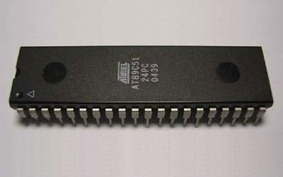
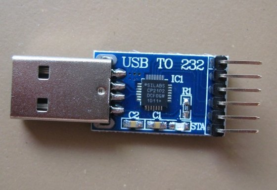
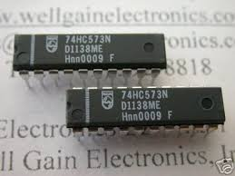
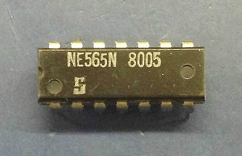
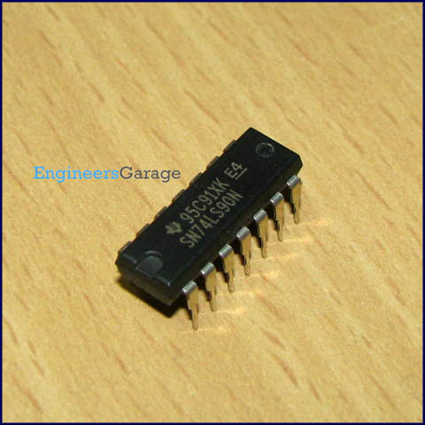
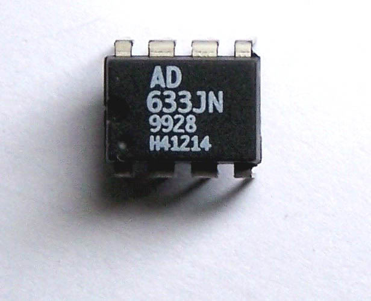
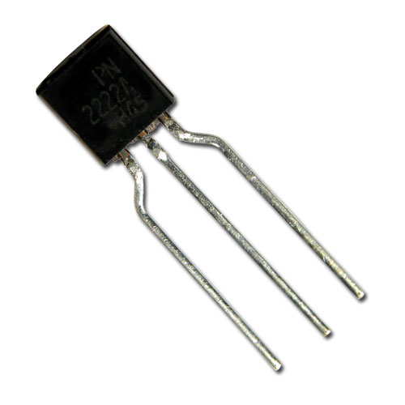
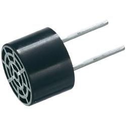

Inter Haptics
Inspiration
JEM is an FEM solver written completely in Java without any 3rd party libraries. Everything, from meshing to heatmaps was coded from scratch. FEM(Finite Element Method) is a numerical technique for solving PDE's and ODE's when analytical approaches are not possible. In our case, this mostly concerns the Laplace and Poisson equations which help us to construct a potential surface when the boundary conditions are known.
FEM was preceeded by two approaches, the Ritz method based on minimizing a functional and the Galerkin method based on minimizing the residual. Both employ a subdomain basis functions to represent the unknown solution and converge on it iteratively during the minimization process. In FEM, the surface is first discretized by choosing the appropriate basis functions, in our case its the triangle for 2D and eventually tetrahedron for 3D primarily because tesselations created using these structures lead to the most minimal discretization errors hence are generally more accurate. Once the surface has been discretized, the potentials at the nodes of the triangle elements are used to fill in the FEM matrix (stiffness matrix) and these are hence used to compute the potential at any point within the triangle element. Consequently, smaller the triangles lesser is the inaccuracies due to interpolation. The interpolation is linear in the case of FEM and usually just involves a plane described by the potentials at the 3 nodes.
Usage
1.Clone the repository
2.Make sure the system variable "JAVA_HOME" has been set up and pointing to the jdk installation dirctory
3.Navigate to the Inter_Haptics/IS_UltraSonic directory and run
./gradlew cleanEclipse eclipseThe above code will clean the project
4.To build the project ,run
./gradlew build5.To run the project , run
./gradlew run6.For more details, see my video , Please ignore the eclipse importation of the project , and seek to the running to understand the frameworkhttps://youtu.be/iWZdgHCAuVU
Logs
For a detailed tabulation of result during the course of the project ,please check out my blog
NOTE
Due to the inability of the arduino to switch the signal control transistors at a speed higher than a few milliseconds I resorted to use the Raspberry Pi instead. This adds an extra PNP transistor since GPIO's are 3.3 V operational and not 5V therefore added the PNP as a buffer incase anything shoud go wrong which is very unlikely since the source of the signals are digital as well. This requires wiringPi by Gordon Henderson to be installed on the Raspberry Pi, a brief reveiw will reveal that GPIO's can switch at speeds between 4.1MHz-4.6MHz when operated with wiringPi C library which clocks in the nanosecond range which is perfect for switching the transistors.
Link to wiringPi download and install : http://wiringpi.com/download-and-install/
Link to benchmarking RPi GPIO speed : http://codeandlife.com/2012/07/03/benchmarking-raspberry-pi-gpio-speed/
The pitest file uses 9 Transducers, right now it works only for 9 but with inclusion of Adafruit's PWM i2c driver this can be increased significantly to include as many as 992 transducers.
The pin configs are as follows:
(38)(07)(22) (28)(07)(06)
(18)(16)(15) (05)(04)(03)
(13)(12)(11) (02)(01)(00)
SET-A SET-B
Where the numbers of SET-A correspond to the physical pins of RPi's GPIOs and numbers of SET-B correspond to the wiringpi definition or numbering for those physical pins , either one can be used while coding the C file, but strictly adhere to the physical pin mapping (SET-A) when connecting the transducers to the RPI.
Components Required
AT89C51/AT89S51
http://www.keil.com/dd/docs/datashts/atmel/at89c51_ds.pdf
The Intel MCS-51 (commonly referred to as 8051) is a Harvard architecture, CISC instruction set, single chip microcontroller (μC) series which was developed by Intel in 1980 for use in embedded systems. Intel's original versions were popular in the 1980s and early 1990s and enhanced binary compatible derivatives remain popular today. The IC-8051 was preferred above all the other IC’s cause for generating two independent square waves simultaneously we required two timers and 8051 offers two timers and besides this it was the most inexpensive option for achieving this goal. The two square waves are generatd at specific frequencies as required by the carrier and modulating signals, these are then passed into a R-2R ladder network to obtain the desired waveform.The availability of two timers implies that ,while one can be monitored continuously the other is run in interrupt mode and is checked automatically when it interrupts due to overflow.When an interrupt occurs from either of the timers , the execution jumps to a vector table which contains code to transfer certain byte values to the specific ports corresponding the specific signals
CP2102
https://www.silabs.com/Support%20Documents/TechnicalDocs/CP2102-9.pdf
The Raspberry Pi is used as the processor for testing the module however the the board also possess many functionality which is not required by the porject and hence compromises efficiency and area, therefore once the testing phase checks in , the idea is to develope a breakout board independent of serial comm module thereby greatly reducing chip power consumption and area. The intention is very much similar to that of arduino pro mini. Therefore to program such a device, we would required serial to UART and hence make use of CP2102, this can also be made use of if the PC itself acts as the controller , in-charge of sending signals to the transducer array in which case the signal frequencies to be used are sent to 8051 by the PC through CP2102
IC74573
http://www.nxp.com/documents/data_sheet/74HC_HCT573.pdf
On moving the data from the accumulator to the output ports , there is a finite delay involved as a result of this the voltage intermittently drops to 0v just before rising to its new potential. The 'mov' operation on an average takes about 1 Machine Cycle which on using a 24Mhz crystal approximates to 0.5us, Therefore there is a 0.5us delay during the transition from previous value to new value and during this the port is in high impedance and hence the signal drops to zero intermittently
(Before using IC74573)
(After using IC74573)
Therefore the value assigned to the ports during the previous cycle is latched by the IC followed by which it is disabled until the port acquires new value during the next cycle , therefore until the cycle elapses the values being latched by the IC prevents an abrupt drop to zero during the transition from one cycle to another
ICNE565
http://www.bucek.name/pdf/ne565.pdf
Since ATMEL's AT89C51 can work with a maximum crystal frequency of 24MHz the time per machine cycle will be around 0.5us(micro second) which implies that since a complete sine wave will take about 25 individual values to be loaded to the port and each loading step taking an average of 15 machine cycles(7.5 microseconds) , the max frequency that can be generated will be around 5.3KHz . Therefore this will have to be increased atleast 10 fold for which we employ PLL(Phase locked loop) with divide by 10 counter to latch the output frequency to 1/10th of the input(source) frequency. The same applies for the low frequency which again is limited to 300Hz therefore requiring another frequency division by atleast 10 fold. During the initial loading of the signal values, they are produced under default configuration(40KHz and 200Hz) ,this is done because ,since we are using PLL's to vary the frequency of the signal ,the PLL's have fixed capture range and significantly large tracking range and so once the input has been captured it can be tracked well beyond the optimum range of input frequency but since it encompasses a low pass filter ,therefore if the value input varies considerably from the configured value then it may not be captured hence failing to work as a multiplier or divider, for this purpose the carrier initial frequency is set to 40KHz and modulating signal initial frequency is set to 200Hz , these can be varied but only after the device and code performs as expected for these inputs which imply that they have been captured and are being tracked.
IC7490
http://www.ti.com/lit/ds/symlink/sn74ls90.pdf
The IC7490 is configured for use as a decade counter, meaning it is connected between VCO(Voltage controlled oscillator) and Phase comparator of the PLL for multiplication or between LPF(Low pass filter output) and VCO for division. It basically helps to translate the frequency of the signal output from the 8051 to the desired frequency value.
ICAD633JN
http://www.analog.com/media/en/technical-documentation/data-sheets/AD633.pdf
Transducers basically contain quartz crystals which undergo deformation upon application of an AC wave and if the frequency of the applied AC wave coincides with the resonant frequency of the crystal ,the amplitude of the output mechanical disturbance(ultrasonic wave) is maximum .However tiny receptors embedded in our skin called mechanoreceptors
are incapable of detecting vibrations at a frequency of 40khz, it is most sensitive in the frequency range
Therefore we modulate the AC 40khz sinusoid with the amplitude of a 100-200 Hz sinusoid and hence creating a multi-frequency wave which is then amplified to 15Vp-p and fed to the transmitter
10k 20k 1k 470k
The resistors are primarily used either for forming the R-2R ladder network to obtain the analog signals from the 8051 or to bias the transistors to the teir fixed operating Q points for ideally operation as demanded by the project.
The 10k and 20k resistors form the R-2R ladder used as DAC(Digital to Analog Converter).
The 470k is used to contain the base current of the switching PNP transistor to under 15mA inorder to protect the Raspberry Pi's gpio controlling it.
30pf 0.1uf
PN2222A
https://www.fairchildsemi.com/datasheets/PN/PN2222A.pdf
This transistor was chosen primarily because of its relatively very small storage time thereby allowing it to transition between on and off state very fast which should technically be under a micro second for proper working of the project. It also as a fairly high current gain ranging between 100 to 300 and a fairly rugged Vce rating thereby allowing any small fluctuations to pass through without damage.
MA40S4S
Circuit
The link to the PCB layout and schematic on my PCBweb account of the 8051 Signal generator is http://www.pcbweb.com/projects/tzcshXaWRVyupbADNmpTBtbRMHqndq
Documentation
Algorithm in Brief
Compute the diffraction pattern for a single ultrasonic transducer using Rayleigh sommerfeld integralThis helps in modelling the beam pattern of the transducer
This is then integrated over the surface considering each transducer as an element belonging to the surface using either trapezoidal , simpsons 1/3,simpsons 3/8 rule depending on the efficiency and the number of transducers
The sum of the spatial impulse response time shifted to accommodate the delay between excitation of each transducer owing to path difference is then calculated which gives the time delay at which each transducer should be excited to form the point of convergence at the desired point and also to alleviate secondary peaks which may form as result of constructive interference amongst secondary and tertiary wavelets.
Introduction
Acoustic beam modeling of ultrasonic transducers consists of the determination of the acoustic pressure at a point or a region in front of the radiating surface. By the study and implementation of mathematical models, wave propagation is analyzed in nondestructive testing in order to optimize design parameters, such as geometry, focus depth, acoustic beam width and directivity. The acoustic beam generated is mainly dependent on the transducer geometry, the properties of the propagating medium and the excitation pulse form. The acoustic beam generated by an ultrasonic transducer can be modeled using the Rayleigh and Rayleigh-Sommerfeld equations which describe the acoustic propagation phenomenon in an integral form. From the Rayleigh-Sommerfeld equations, two methods for calculating the acoustic beam were developed. The first method is an exact solution for apertures with a simple geometrical shape and the second one is a numerical approximation that allows the analysis of arbitrarily shaped apertures. The most used method to calculate the exact solution is based on the temporal impulse response of the velocity potential. This method permits to calculate, in the time domain, the acoustic pressure induced in the medium by the transducer in an arbitrary spatial point. The method was initially proposed in acoustics by Stephanishen (Stephanishen, 1971) and, in order to obtain the exact solution of the impulse response, it is necessary to calculate complex integrals, only possible in the simplest geometry cases: circular pistons and hence we choose to use the circular piston transducer as the radiating source.
The acoustic beam generated depends on the emitted wave type . Excitation can be in continuous mode by using an electrical sine signal or in transient mode by means of an electrical pulse of short duration. Both excitation modes can be applied in the simulations of the acoustic beam by using the impulse response however for our project we decided to use continuous sinusoidal signals
Ultrasonic transducers can be either mono-element or multielement. The mono-element transducers have only one active element generally made of a piezoelectric material. The monoelement transducer is widely used in nondestructive testing and characterization of solids and liquids. That transducer has a fixed focus that has to be translated to generate an image. The plane piston transducer has a natural focus in a spatial point that is a function of its operation frequency and its radius. That natural focus can be modified by acoustic lens. The multi-element transducer is an array of active elements working independently. The main advantage of the ultrasonic arrays consists in the generation of an image avoiding the transducer translation. This is possible due to the capability of deflecting the acoustic beam and the dynamic modification of the focus. It is thus possible to avoid the complex mechatronic system required for controlling the transducer position. Therefore by using an array of transducers employed with phased array concepts we can bypass the complex electro-mechanical system which would otherwise be required to focus the point of convergence